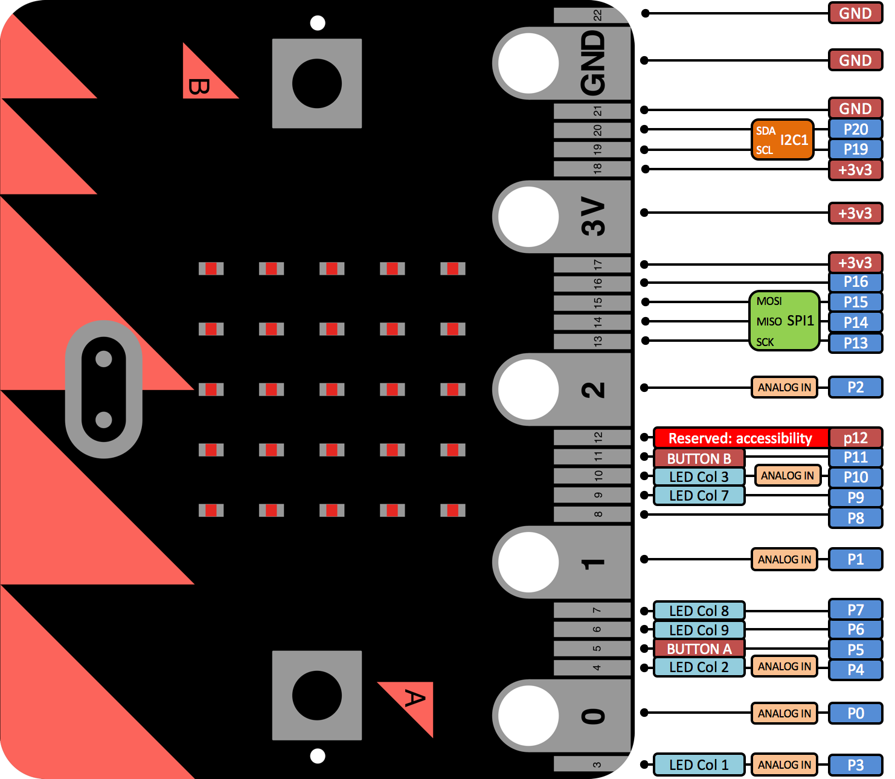

uBit.io#
Overview#
uBit.io provides a means of accessing the pins exposed on the edge connector,
enabling Analog and Digital Input/Output operations. Some pins can also perform
basic touch sensing through resistance detection.
There are 6 Analog capable pins which can be used to generate Analog wave forms and approximate Analog inputs. There is only one Analog to Digital converter on the NRF51822, which prevents concurrent analog to digital conversions.
Analog waveforms are simulated via Pulse Width Modulation generated by software. As such, there is a limit of 3 concurrent PWM outputs.
There are two ways of accessing pins on the edge connector:
uBit.io.P0.setDigitalValue(1)- Would configure P0 as a digital output, and set that pin HI.uBit.io.pin[1].setDigitalValue(1)- Would configure P1 as a digital output, and set that pin HI.
By design, the operation of the pins on the edge connector are dynamic, and can swap between modes based on the method that as been called.
For example:
while(1)
{
uBit.io.P0.setDigitalValue(1);
uBit.sleep(1000);
uBit.io.P0.setServoValue(90);
uBit.sleep(1000);
}Will transition between Digital and Analog output every second.
Shared Functionality#
As well as being General Purpose Input Output (GPIO) pins, some pins on the micro:bit have other functionality used internally by the micro:bit.
Therefore, some functionality on the micro:bit may have to be disabled in order to use some GPIO pins.
This is illustrated by the diagram below:

Message Bus ID#
| Constant | Value | Capability |
|---|---|---|
| MICROBIT_ID_IO_P0 | 7 | Analog, digital and touch |
| MICROBIT_ID_IO_P1 | 8 | Analog, digital and touch |
| MICROBIT_ID_IO_P2 | 9 | Analog, digital and touch |
| MICROBIT_ID_IO_P3 | 10 | Analog and digital |
| MICROBIT_ID_IO_P4 | 11 | Analog and digital |
| MICROBIT_ID_IO_P5 | 12 | Digital only |
| MICROBIT_ID_IO_P6 | 13 | Digital only |
| MICROBIT_ID_IO_P7 | 14 | Digital only |
| MICROBIT_ID_IO_P8 | 15 | Digital only |
| MICROBIT_ID_IO_P9 | 16 | Digital only |
| MICROBIT_ID_IO_P10 | 17 | Analog and digital |
| MICROBIT_ID_IO_P11 | 18 | Digital only |
| MICROBIT_ID_IO_P12 | 19 | Digital only |
| MICROBIT_ID_IO_P13 | 20 | Digital only |
| MICROBIT_ID_IO_P14 | 21 | Digital only |
| MICROBIT_ID_IO_P15 | 22 | Digital only |
| MICROBIT_ID_IO_P16 | 23 | Digital only |
| MICROBIT_ID_IO_P19 | 24 | Digital only |
| MICROBIT_ID_IO_P20 | 25 | Digital only |
Message Bus Events#
When isTouched() is called, provided that the selected pin has touch capabilities
(outlined above), an instance of button will be created. Listeners
can therefore be placed using the desired pins’ ID, with the exact same events
produced by a standard button.
uBit.messageBus.listen(MICROBIT_ID_IO_P0, MICROBIT_EVT_ANY, someFunction);
uBit.io.P0.isTouched();| Constant | Value |
|---|---|
| MICROBIT_BUTTON_EVT_DOWN | 1 |
| MICROBIT_BUTTON_EVT_UP | 2 |
| MICROBIT_BUTTON_EVT_CLICK | 3 |
| MICROBIT_BUTTON_EVT_LONG_CLICK | 4 |
| MICROBIT_BUTTON_EVT_HOLD | 5 |
| MICROBIT_BUTTON_EVT_DOUBLE_CLICK | 6 |
API#
Constructor#
MicroBitPin( int id, PinName name, PinCapability capability)#
Description#
Constructor. Create a MicroBitPin instance, generally used to represent a pin on the edge connector.
Parameters#
intid - the unique EventModel id of this component.PinNamename - the mbed PinName for this MicroBitPin instance.PinCapabilitycapability - the capabilities this MicroBitPin instance should have. (PIN_CAPABILITY_DIGITAL, PIN_CAPABILITY_ANALOG, PIN_CAPABILITY_AD, PIN_CAPABILITY_ALL)
Example#
MicroBitPin P0(MICROBIT_ID_IO_P0, MICROBIT_PIN_P0, PIN_CAPABILITY_ALL); setDigitalValue#
int setDigitalValue( int value)#
Description#
Configures this IO pin as a digital output (if necessary) and sets the pin to ‘value’.
Parameters#
intvalue - 0 (LO) or 1 (HI)
Returns#
MICROBIT_OK on success, MICROBIT_INVALID_PARAMETER if value is out of range, or MICROBIT_NOT_SUPPORTED if the given pin does not have digital capability.
Example#
MicroBitPin P0(MICROBIT_ID_IO_P0, MICROBIT_PIN_P0, PIN_CAPABILITY_BOTH);
P0.setDigitalValue(1); // P0 is now HI getDigitalValue#
int getDigitalValue()#
Description#
Configures this IO pin as a digital input (if necessary) and tests its current value.
Returns#
1 if this input is high, 0 if input is LO, or MICROBIT_NOT_SUPPORTED if the given pin does not have digital capability.
Example#
MicroBitPin P0(MICROBIT_ID_IO_P0, MICROBIT_PIN_P0, PIN_CAPABILITY_BOTH);
P0.getDigitalValue(); // P0 is either 0 or 1; int getDigitalValue( PinMode pull)#
Description#
Configures this IO pin as a digital input with the specified internal pull-up/pull-down configuraiton (if necessary) and tests its current value.
Parameters#
PinModepull - one of the mbed pull configurations: PullUp, PullDown, PullNone
Returns#
1 if this input is high, 0 if input is LO, or MICROBIT_NOT_SUPPORTED if the given pin does not have digital capability.
Example#
MicroBitPin P0(MICROBIT_ID_IO_P0, MICROBIT_PIN_P0, PIN_CAPABILITY_BOTH);
P0.getDigitalValue(PullUp); // P0 is either 0 or 1; setAnalogValue#
int setAnalogValue( int value)#
Description#
Configures this IO pin as an analog/pwm output, and change the output value to the given level.
Parameters#
intvalue - the level to set on the output pin, in the range 0 - 1024
Returns#
MICROBIT_OK on success, MICROBIT_INVALID_PARAMETER if value is out of range, or MICROBIT_NOT_SUPPORTED if the given pin does not have analog capability.
setServoValue#
int setServoValue( int value)#
Description#
Configures this IO pin as an analog/pwm output (if necessary) and configures the period to be 20ms, with a duty cycle between 500 us and 2500 us.
A value of 180 sets the duty cycle to be 2500us, and a value of 0 sets the duty cycle to be 500us by default.
This range can be modified to fine tune, and also tolerate different servos.
Parameters#
intvalue - the level to set on the output pin, in the range 0 - 180.
Returns#
MICROBIT_OK on success, MICROBIT_INVALID_PARAMETER if value is out of range, or MICROBIT_NOT_SUPPORTED if the given pin does not have analog capability.
int setServoValue( int value, int range)#
Description#
Configures this IO pin as an analog/pwm output (if necessary) and configures the period to be 20ms, with a duty cycle between 500 us and 2500 us.
A value of 180 sets the duty cycle to be 2500us, and a value of 0 sets the duty cycle to be 500us by default.
This range can be modified to fine tune, and also tolerate different servos.
Parameters#
intvalue - the level to set on the output pin, in the range 0 - 180.intrange - which gives the span of possible values the i.e. the lower and upper bounds (center +/- range/2). Defaults to MICROBIT_PIN_DEFAULT_SERVO_RANGE.
Returns#
MICROBIT_OK on success, MICROBIT_INVALID_PARAMETER if value is out of range, or MICROBIT_NOT_SUPPORTED if the given pin does not have analog capability.
int setServoValue( int value, int range, int center)#
Description#
Configures this IO pin as an analog/pwm output (if necessary) and configures the period to be 20ms, with a duty cycle between 500 us and 2500 us.
A value of 180 sets the duty cycle to be 2500us, and a value of 0 sets the duty cycle to be 500us by default.
This range can be modified to fine tune, and also tolerate different servos.
Parameters#
intvalue - the level to set on the output pin, in the range 0 - 180.intrange - which gives the span of possible values the i.e. the lower and upper bounds (center +/- range/2). Defaults to MICROBIT_PIN_DEFAULT_SERVO_RANGE.intcenter - the center point from which to calculate the lower and upper bounds. Defaults to MICROBIT_PIN_DEFAULT_SERVO_CENTER
Returns#
MICROBIT_OK on success, MICROBIT_INVALID_PARAMETER if value is out of range, or MICROBIT_NOT_SUPPORTED if the given pin does not have analog capability.
getAnalogValue#
int getAnalogValue()#
Description#
Configures this IO pin as an analogue input (if necessary), and samples the Pin for its analog value.
Returns#
the current analogue level on the pin, in the range 0 - 1024, or MICROBIT_NOT_SUPPORTED if the given pin does not have analog capability.
Example#
MicroBitPin P0(MICROBIT_ID_IO_P0, MICROBIT_PIN_P0, PIN_CAPABILITY_BOTH);
P0.getAnalogValue(); // P0 is a value in the range of 0 - 1024 isInput#
int isInput()#
Description#
Determines if this IO pin is currently configured as an input.
Returns#
1 if pin is an analog or digital input, 0 otherwise.
isOutput#
int isOutput()#
Description#
Determines if this IO pin is currently configured as an output.
Returns#
1 if pin is an analog or digital output, 0 otherwise.
isDigital#
int isDigital()#
Description#
Determines if this IO pin is currently configured for digital use.
Returns#
1 if pin is digital, 0 otherwise.
isAnalog#
int isAnalog()#
Description#
Determines if this IO pin is currently configured for analog use.
Returns#
1 if pin is analog, 0 otherwise.
isTouched#
int isTouched()#
Description#
Configures this IO pin as a “makey makey” style touch sensor (if necessary) and tests its current debounced state.
Users can also subscribe to MicroBitButton events generated from this pin.
Returns#
1 if pin is touched, 0 if not, or MICROBIT_NOT_SUPPORTED if this pin does not support touch capability.
Example#
MicroBitMessageBus bus;
MicroBitPin P0(MICROBIT_ID_IO_P0, MICROBIT_PIN_P0, PIN_CAPABILITY_ALL);
if(P0.isTouched())
{
//do something!
}
// subscribe to events generated by this pin!
bus.listen(MICROBIT_ID_IO_P0, MICROBIT_BUTTON_EVT_CLICK, someFunction); setServoPulseUs#
int setServoPulseUs( int pulseWidth)#
Description#
Configures this IO pin as an analog/pwm output if it isn’t already, configures the period to be 20ms, and sets the pulse width, based on the value it is given.
Parameters#
intpulseWidth - the desired pulse width in microseconds.
Returns#
MICROBIT_OK on success, MICROBIT_INVALID_PARAMETER if value is out of range, or MICROBIT_NOT_SUPPORTED if the given pin does not have analog capability.
setAnalogPeriod#
int setAnalogPeriod( int period)#
Description#
Configures the PWM period of the analog output to the given value.
Parameters#
intperiod - The new period for the analog output in milliseconds.
Returns#
MICROBIT_OK on success, or MICROBIT_NOT_SUPPORTED if the given pin is not configured as an analog output.
setAnalogPeriodUs#
int setAnalogPeriodUs( int period)#
Description#
Configures the PWM period of the analog output to the given value.
Parameters#
intperiod - The new period for the analog output in microseconds.
Returns#
MICROBIT_OK on success, or MICROBIT_NOT_SUPPORTED if the given pin is not configured as an analog output.
getAnalogPeriodUs#
int getAnalogPeriodUs()#
Description#
Obtains the PWM period of the analog output in microseconds.
Returns#
the period on success, or MICROBIT_NOT_SUPPORTED if the given pin is not configured as an analog output.
getAnalogPeriod#
int getAnalogPeriod()#
Description#
Obtains the PWM period of the analog output in milliseconds.
Returns#
the period on success, or MICROBIT_NOT_SUPPORTED if the given pin is not configured as an analog output.
setPull#
int setPull( PinMode pull)#
Description#
Configures the pull of this pin.
Parameters#
PinModepull - one of the mbed pull configurations: PullUp, PullDown, PullNone
Returns#
MICROBIT_NOT_SUPPORTED if the current pin configuration is anything other than a digital input, otherwise MICROBIT_OK.
eventOn#
int eventOn( int eventType)#
Description#
Configures the events generated by this MicroBitPin instance.
MICROBIT_PIN_EVENT_ON_EDGE - Configures this pin to a digital input, and generates events whenever a rise/fall is detected on this pin. (MICROBIT_PIN_EVT_RISE, MICROBIT_PIN_EVT_FALL) MICROBIT_PIN_EVENT_ON_PULSE - Configures this pin to a digital input, and generates events where the timestamp is the duration that this pin was either HI or LO. (MICROBIT_PIN_EVT_PULSE_HI, MICROBIT_PIN_EVT_PULSE_LO) MICROBIT_PIN_EVENT_ON_TOUCH - Configures this pin as a makey makey style touch sensor, in the form of a MicroBitButton . Normal button events will be generated using the ID of this pin. MICROBIT_PIN_EVENT_NONE - Disables events for this pin.
Parameters#
inteventType - One of: MICROBIT_PIN_EVENT_ON_EDGE, MICROBIT_PIN_EVENT_ON_PULSE, MICROBIT_PIN_EVENT_ON_TOUCH, MICROBIT_PIN_EVENT_NONE
Returns#
MICROBIT_OK on success, or MICROBIT_INVALID_PARAMETER if the given eventype does not match
Example#
MicroBitMessageBus bus;
MicroBitPin P0(MICROBIT_ID_IO_P0, MICROBIT_PIN_P0, PIN_CAPABILITY_BOTH);
P0.eventOn(MICROBIT_PIN_EVENT_ON_PULSE);
void onPulse(MicroBitEvent evt)
{
int duration = evt.timestamp;
}
bus.listen(MICROBIT_ID_IO_P0, MICROBIT_PIN_EVT_PULSE_HI, onPulse, MESSAGE_BUS_LISTENER_IMMEDIATE) Note
In the MICROBIT_PIN_EVENT_ON_PULSE mode, the smallest pulse that was reliably detected was 85us, around 5khz. If more precision is required, please use the InterruptIn class supplied by ARM mbed.